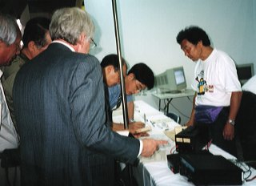
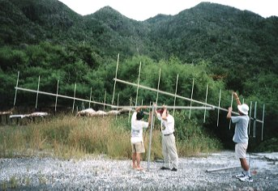
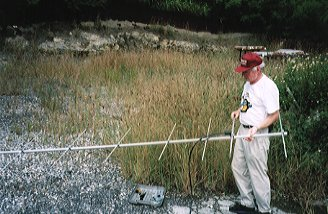
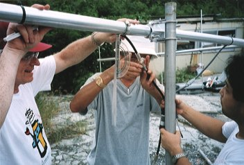
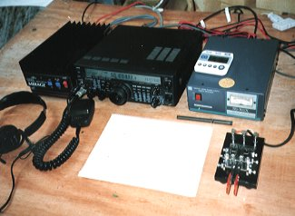
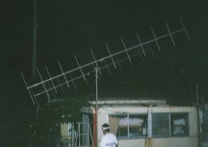
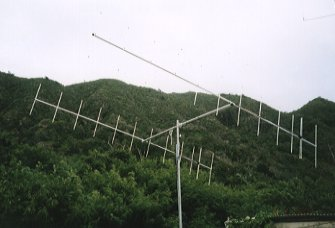
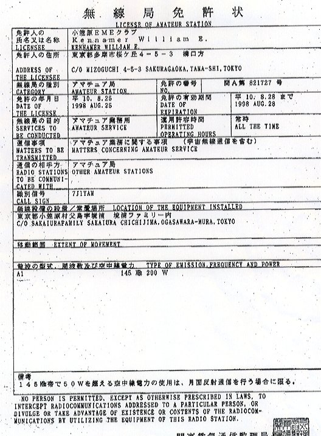
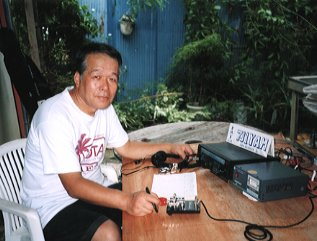
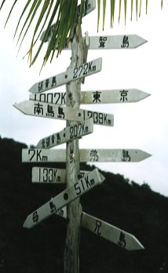

7J1YAM (OGASAWARA EME CLUB)
小笠原で初の144MHz EME運用

7J1YAMを運用するK5FUV/7J2ADX、JA1BK
(1998 Aug.25～Aug.28)
7J1YAMを運用するK5FUV/7J2ADX、JA1BK
(1998 Aug.25～Aug.28)
|
【EMEの運用】
日本の免許制度の中で、V.UHFの200Wの大電力の免許取得が簡単でないことは、最初から予想されたが、144MHzのEMEの準備を進めている段階で、
やはり最初に突き当たったのはこの問題だった。

 "Ogasawara EME Club 7J1YAM" の落成検査に立ち会う免許人のBill K5FUV=7J2ADX 【EME Antennaaの組み立て】
宿に落ち着く間もなく、144MHz用のアンテナの設置に取りかかった。
夕方までにアンテナ工事を終え、報告する事が7J1YAMの最後の免許条件だったため、大至急アンテナ工事を終えなければならない。
幸い、境浦ファミリーの敷地内に適当な広場があり、ここを提供して頂いた。
2棟の物置と物置の間にトタン屋根が架かっているので、この下を運用場所として使わせてもらうことにした。
  2m EME-Antennas の組み立て 【EMEの運用報告】
今回は個人の休暇に合わせた日程と、簡単な設備などから、正直なところEMEでのQSOの可能性は、かなり難しいものに思われた。
とくに"月の位置"は、太陽と月がほとんど同じ軌道上にあり、ノイズレベルは高くなることが予想された。
さらに、運用地の境浦地区は、父島の西側に位置するため、東側の北米に対して最も条件の良いパスとなる"月の出"の低仰角の時間帯が、
200m以上の山に遮られて使えないことなどだった。
 
144MHz 12EL X 2 Antennas/200W EME Station(FT-847+AMP)
【2m EME Schedule】
いよいよ初日(25日)のヨーロッパとのスケジュールは、09:00z(18:00JST)から始まった。
09:00-09:30z F3VS AZ 255.3 EL 24.3
09:30-10:00z SM5FRH AZ 259.1 EL 17.9
10:00-10:30z I2FAK AZ 262.6 EL 11.4
10:30-11:00z SM2CEW AZ 266.0 EL 4.9
各局30分の持ち時間と、1分間隔の送受によるスケジュールは、緊張の中にも淡々と進められていった。
しかし、初日のスケジュールは、期待に反して収穫は何もないまま終わってしまった。小笠原からヨーロッパ方向（270度方向）は、障害となるものは何も無いので期待していたのだが、信号のカケラも聞こえなかったこの日の結果に、 明日からのスケジュールに一抹の不安をおぼえる。なにしろ、朝方に予定されている北米方向の東側には、200-300mの山が"邪魔"をしているのだ。
  7J1YAM 144MHz 12ELX2 EME-Antennas Beam./(Left)to EU & (Right)to North America
EMEのスケジュール終了後の夜間は、各局の個人コールを使って、HF帯でQSOを楽しんだ。 各バンドとも高さの低いダイポールだったが電波は驚くほど良く飛んでくれた。 とくに7MHz帯の飛びはすばらしく、ヨーロッパ、南米、アフリカまでローパワーでQSOが出来た。 意外だったのは多くのDX局から"初めてのJD1のQSO""ニューカントリーありがとう"と言われたことだった。 クラブコールの7J1YAMは、144MHzだけの免許なので、残念ながらHF帯で使う事は出来ない。
翌朝(26日)、いよいよ期待している北米方向のスケジュールが始まった。運用者はK5FUV・Billが担当した。
00:00-00:30z KB8RQ AZ 98.6 EL 17.1
00:30-01:00z W5UN AZ 102.5 EL 23.5 QSO
01:00-01:30z K5GW AZ 106.7 EL 29.8 QSO
01:30-02:00z VE7BQH AZ 111.0 EL 35.9
悪条件の中での運用だったが、結果的には相手の設備に助けられ、この日に初のEMEによるQSOが、W5UN、K5GWを相手に成功した。
私(JA1RJU)は早朝まで7MHzでヨーロッパ・ネットに付き合わされ、交代した後だったので、残念ながらこの記念すべきQSOに立ち会う事は出来なかった。
意外なほど早くQSO出来た事に驚かされ、さすが相手は"EMEのビッグステーション"だけはある、と感心する。朝の北米のスケジュール成功に気を良くして、夕方からのヨーロッパのスケジュールに臨んだが、台風4号の接近による、 豪雨と強風で、アンテナの方位が定まらず、残念ながらスケジュールは中止することになった。 この台風の接近により、当初予定されていた帰りの船便(28日出港)は、一日早まり、翌27日の昼に父島を出港することに決まった。 27日の朝、昨夜の豪雨は、明け方になって一時的に収まり、薄日が射す天気となった。 昨日のスケジュールでのQSOに刺激されて、アンテナを2mほど上げる。 これで少しはトタン屋根の影響は少なくなり、ビームパターンの改良が出来るはず...という程度の変更だった。 今日の便で帰京することになったK5FUVとJA1BKは、北米とのスケジュールが、EME運用の最後となってしまった。 昨日の話し合いで、JA1RJUとJK7TKEの両局は、次の便まで滞在し、残るスケジュールをこなす事に決まった。 ただし、次の便が何日になるのか予定が立たず、はっきりしていることは、この台風4号が日本近海から遠ざかった時という事だけだった。 われわれと一緒の船で来た客の大部分は、今日の船で島を離れるという。 「境浦ファミリー」の客もわれわれ二人を残し全員が帰ることになった。
00:30-01:00z K5GW AZ 99.1 EL 6.0 QSO (W5UNから変更)
01:00-01:30z KB8RQ AZ 104 EL 14.0
01:30-02:00z VE7BQH AZ 108 EL 18.0
02:00-02:30z K5GW AZ 110 EL 20.4 QSO
最後のスケジュールはJA1BK、K5FUVの運用で始められた。船の出発時間が迫っているため、二人のEME運用のチャンスは最初のK5GWのスケジュールのみだったが、
この日もK5GWの信号は最初から確認出来た。帰京する二人が出発した後の北米のスケジュールは、JA1RJUによって運用されたが、K5GWはこの時も"良く"聞こえた。 "生"で聞く144MHzのEME信号は初めてだったが、この日の信号は、50MHzで聞く弱いヨーロッパのスキャッターより強かった。 台風から逃れる様に出港した「おがさわら丸(Ogasawara-Maru)」を見送って、午後からのヨーロッパのスケジュールに向けて準備をする。 一時的ながら天候も回復して雨は降っていないので、今晩10:10z－12:10zのスケジュールに期待がかかる。 ところが、スケジュール一時間前になって突然強風と豪雨が襲ってきた。 台風が更に接近して、暴風圏に入ってしまったようだ。 スケジュールどころではなくなったため、倒壊を防ぐため、144MHzのEMEのアンテナを降ろす事に決定。 ついに一日の免許期限を残して、144MHz EME局・7J1YAMは、この日でQRTした。 この判断は正しかった。翌朝風雨のなかを点検に行くと、HF帯のアンテナのマストは先端が折れ、ダイポールは地面に舞い降りていた。 台風4号はその後も小笠原近海に居座り続け、強風と豪雨が4日間続いた。
 7J1YAM EME License (145MHz 200W A1)の免許状コピー 今回の144MHzのEME運用は、免許の問題もからむ中での短いスケジュールのうえ、途中で予期しない台風に遭遇するなど、十分な運用が出来なかったが、 この経験は、今後の本格的な運用に向けての"予備運用"として、大いに意義あるものだった。 心残りだったのは、北米と共にスケジュールを組んでいたヨーロッパ方面が、台風4号の影響による強風などで、満足に対応出来なかった事だった。 7J1YAMの全運用期間を通じ、電波の反射体である"月"を眺める機会は一度もなかった。
(de JA1RJU/Kazu Ogasawara)
 
7J1YAM(OP.JA1RJU/JD1=Left & JK7TKE/JD1) 【包括免許制度の勧め】
今回の小笠原でのEMEの運用にあたり、日本の免許制度の"不自由さ"を改めて感じさせられました。 現在、インターネットに総務庁の「国の行政に対する苦情」の受け付けコーナーがあります。 先に「包括免許導入」に対する意見を寄せたところ、この問題に「興味」を示していますので、郵政省の監督官庁である総務庁から「包括免許制度」導入を働きかけるのも有効です。 なるべく多くの皆さんから「意見」を寄せて下さい。 |
 |
Ogasawara Is. |
 |
Ogasawara Is. |
 |
Flash ! DX |